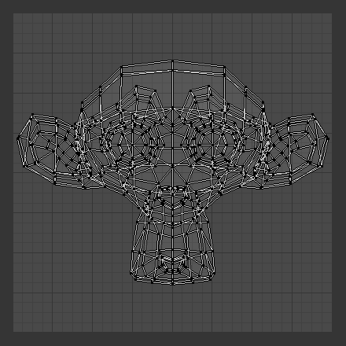
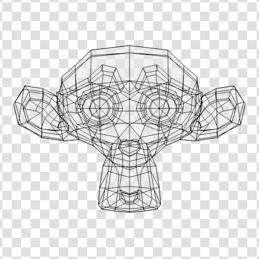

Editing UVs¶
After unwrap, you will likely need to arrange the UV maps into something that can be logically textured or painted. Your goals for editing are:
- Stitch some pieces (UV maps) back together.
- Minimize wasted space in the image.
- Enlarge the faces where you want more detail.
- Re-size/enlarge the faces that are stretched.
- Shrink the faces that are too grainy and have too much detail.
With a minimum of dead space, the most pixels can be dedicated to giving the maximum detail and fineness to the UV Texture. A UV face can be as small as a pixel (the little dots that make up an image) or as large as an entire image. You probably want to make some major adjustments first, and then tweak the layout.
Menu¶
- Snap to pixel
- Will force the UVs to snap to the nearest pixels of an image if loaded.
- Constraining to Image Bounds
- Turning on Constrain to Image Bounds will prevent UVs from being moved outside the 0 to 1 UV range.
- UV Sculpt
- Live Unwrap
- Unwrap
Pin and Unpin¶
You can pin UVs so they do not move between multiple unwrap operations.
When Unwrapping a model it is sometimes useful to “Lock” certain UVs, so that parts of a UV layout stay the same shape, and/or in the same place.
Pinning is done selecting a UV, then by selecting Pin from the UVs menu,
or the shortcut P. You can Unpin a UV with the shorctut Alt-P
Pinning is most effective when using the Unwrap method of UV mapping, for organic objects. An example is when you are modeling a symmetrical object using the Mirror Modifier. Some of the UVs on the mirror axis may be shared across the mirrored counterparts. You could pin the UVs that correspond to the midline, then align them on the X axis, and they will stay in that location.
Pinning also work great with the Live Unwrap tool. If you pin two or more UVs, with Live Unwrap on, dragging pinned UVs will interactively unwrap the model. This helps with fitting a UV island to a certain shape or region.
Pack Islands¶
The Pack Islands tool, shortcut Ctrl-P, will uniformly scale,
then individually transform each Island so that they fill up the UV space as much as possible.
This is an important tool for efficiently making use of the texture space.
Average Island Scale¶
Using the Average Island Scale tool, shortcut Ctrl-A,
will scale each UV island so that they are all approximately the same scale.
Minimize Stretch¶
The Minimize Stretch tool, Ctrl-V,
reduces UV stretch by minimizing angles. This essentially relaxes the UVs.
Stitch¶
Stitch, V, will join selected UVs that share vertices.
You set the tool to limit stitching by distance in the Tool Settings,
by activating Use Limit and adjusting the Limit Distance
Seams¶
- Mark Seam
- Clear Seam
- Seams From Island
Copy Mirrored UV coords¶
Transform¶
- Translate
G - Rotate
R - Scale
S - Shear
Shift-Ctrl-Alt-S
Axis Locking¶
Transformations can be locked to an axis by pressing X or Y after
one of the transform tools. Also,
holding the MMB will constrain movement to the X or Y axis.
Mirror¶
UVs can be mirrored on the Y axis or the X axis:
- Mirror X
- Mirror Y
You can also use the hotkey Ctrl-M, then enter X or Y,
or hold the MMB and drag in the mirror direction.
Snap¶
Snapping in UV/image editor is similar to Snapping in 3D. For the snap to pixel options to work an image has to be loaded.
- Selected to Pixels
- Moves selection to nearest pixel. See also Snap to pixel above.
- Selected to Cursor
- Moves selection to 2D cursor location.
- Selected to Cursor (Offset)
- Moves selection center to 2D cursor location, while preserving the offset of the vertices from the center.
- Selected to Adjacent Unselected
- Moves selection to adjacent unselected element.
- Cursor to Pixels
- Snaps the cursor to the nearest pixels.
- Cursor to Selected
- Moves the Cursor to the center of the selection.
Weld/Align¶
The Weld or Align tool, W.
- Weld
- The Weld tool will move selected UVs to their average position.
- Remove Doubles UV
- Straighten
- Auto, X, Y
- Align
Will line up the selected UVs on the X axis, Y axis, or automatically chosen axis.
Auto, X, Y
Proportional Editing¶
Proportional Editing is available in UV editing. The controls are the same as in the 3D View. See Proportional Editing in 3D for full reference.
Show/Hide Faces¶
- Reveal Hidden
Alt-H - Hide Select
H - Hide Unselect
Shift-H
Export UV Layout¶
Using your favorite image painting program, you could use an exported UV layout to create a texture. Then save your changes, and back in Blender, use the menu command to load it as your UV image for the mesh in Edit Mode for the desired (and active) UV Texture layer.
As a way of communicating to an artist who is painting your UV Texture for you,
Blender has a tool called Save UV Face Layout
(located in the UV/Image Editor, )
that saves an image as a Targa (.tga), EPS, or an SVG format for the object you have selected.
The image is an outline of the UV face mapping. Activating the tool brings up the File Browser with options for saving the layout:

Export Options.
- All UVs
- if disabled, then only the UV faces selected will be outlined
- Modified
- Export UVs from the modified mesh.
- Format
- Select the type of image file to save (
.png,.eps,.svg) - Size
- select the size of the image in pixels. The image be square.
- Fill Opacity
- Set the opacity of the fill.
The image will be lines defining the UV edges that are within the image area of the UV mapping area. Edges outside the boundary, even if selected, will not be shown in the saved graphic.
The artist will use this as a transparent layer in their paint program as a guide when painting your texture. The example below shows Blender in the background, and the Gimp working on the texture, using the saved layout as a guide. Note that targa format supports the Alpha channel, so you can paint transparent areas of the mesh.
For using images as textures, see the page on Image Textures.

A UV Layout in the UV/Image Editor. |

A UV Layout in an paint program. |
{kind=link}
{kind=link}
Header¶
Pivot Point¶
The UV/Image editor has a 2D cursor.
Its position can be changed by LMB clicking in the UV/Image editor.
You can also manually adjust its position in the Properties region.
The range by default is from 0 to 256 starting from the lower left corner.
By enabling Normalized under Coordinates,
the range changes from 0 to 1.
The Pivot Point can be changed to:
- Bounding Box Center
- Median Point
- 2D Cursor Location
Proportional Editing¶
Proportional Editing is available in UV editing. The controls are the same as in the 3D View. See Proportional Editing in 3D for full reference.
Snap¶
UV Data¶
3D View¶
Face Mirror and Rotate UVs¶
The orientation of the UV Texture is defined by each face. If the image is, for example, upside down or laying on its side, use the (in the 3D View in Face Select mode) menu to rotate the UVs per face in 90-degree turns.
The tool mirrors the UVs per face, which flips the image over, showing you the image reversed.